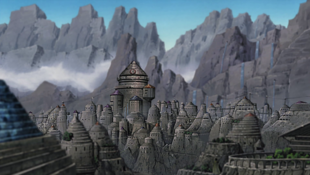

Деревня Скрытого Камня
Деревня Скрытого Камня (яп. 岩隠れの里, Iwagakure no Sato, досл.: Деревня Скрытой Скалы) находится в Стране Земли. Как деревня одной из Пяти Великих Стран Шиноби, Скрытый Камень имеет Каге в качестве своего лидера, известного как Цучикаге, которых, за всю историю деревни, было всего четыре. Скалистые горные цепи, которые окружают деревню, обеспечивают естественную крепость, которой она очень гордится. Архитектура Деревни довольно необычная и состоит из структур, похожих на Скалы и Камни, соединённые между собой сетью мостов. Резиденция Цучикаге является самой высокой структурой с конусообразной крышей и имеет кандзи «Земли» (土, Tsuchi) на нем.
